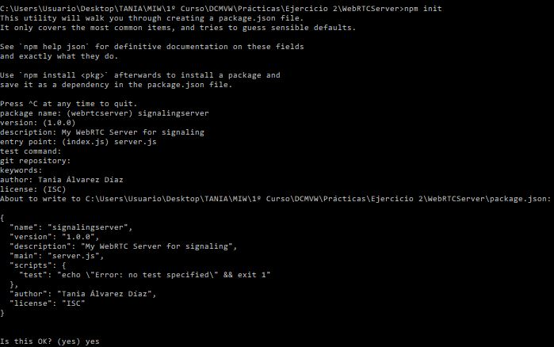
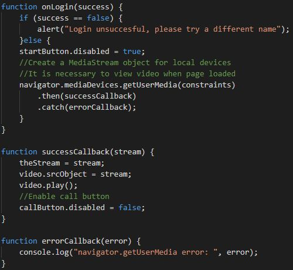
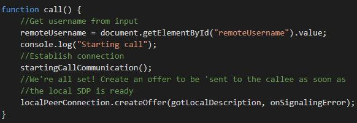
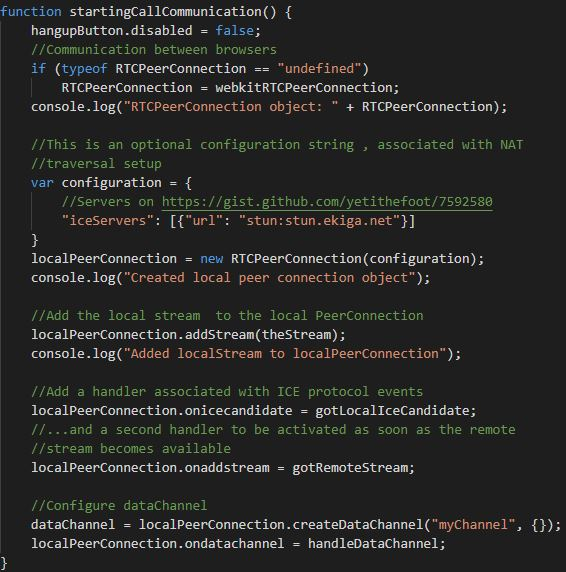
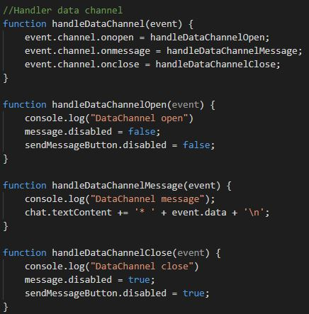

El proyecto consiste en el desarrollo de una aplicación de videochat utilizando WebRTC. Esta aplicación consta de:
Servidor: encargado de gestionar las conexiones de los usuarios.
Cliente: permite a los usuarios conectarse al servidor y realizar el intercambio de vídeo y mensajes de chat con el resto de usuarios conectados al servidor (usando el nombre de dicho usuario).
Desarrollo
Para desarrollar tanto el cliente como el servidor se ha utilizado Visual Studio Code. Adicionalmente, se ha utilizado XAMPP
para desplegar a los clientes y Node.js para instalar y ejecutar el servidor.
Para instalar el servidor se ha creado la carpeta WebRTCServer y desde la consola de Node.js se ha accedido a ella y se ha ejecutado el comando npm init.

Instalación del servidor con Node.js
Desarrollo del servidor
Tras instalar el servidor en Node.js, se han instalado, con el comando npm install NOMBRE_PAQUETE, dos paquetes:
ws: biblioteca de WebSockets para proporcionar un canal de comunicación bidireccional entre cliente y servidor.
express: framework web para Node.js.
A continuación, se ha creado el fichero server.js dentro de la carpeta WebRTCServer.
Este fichero contiene la implementación del servidor, es decir, las variables y funciones necesarias para que éste realice su funcionalidad.
Respecto a las funciones, a continuación se explican las que se consideran más importantes.
El servidor WebSocket cuenta con varias funciones que se ejecutan en función del tipo de evento que se produza.
El evento connection se produce cuando se establece la conexión entre el cliente y el servidor.
El evento close se produce cuando uno de los usuarios solicita cerrar la conexión con otro usuario, es decir, en este caso cuando se cuelga la llamada.
El evento message se produce cuando el servidor recibe un mensaje del cliente a través de la conexión establecida.
En función del tipo de mensaje se producen distintas acciones. Los tipos de mensaje son:
Login: los clientes se registran en el servidor (username único).
Offer: oferta de conexión que desea hacer un cliente a otro (ambos registrados en el sistema).
Answer: respuesta de un cliente a la oferta de conexión.
Candidate: candidato que se envía si la oferta de conexión ha sido aceptada.
Leave: uno de los clientes abandona la conexión.
Desarrollo del cliente
Para desarrollar el cliente se ha utilizado HTML, CSS y Javascript. Por tanto, el proyecto está formado por tres ficheros:
Index.html: fichero HTML que representa la vista del cliente (botones, vídeos y chat).
Style.css: fichero CSS que contiene los estilos que se aplican a los elementos del fichero HTML.
Script.js: fichero Javascript donde se encuentra la implementación (lógica) del cliente, es decir, las funciones necesarias para
comunicarse con el servidor, intercambiar mensajes con otros usuarios, etc.
A continuación, se explican las funciones más importantes del fichero script.js.
La función onLogin se produce cuando el servidor responde ante la pulsación del usuario al botón start.
En el caso de que el usuario solicite iniciar sesión con un nombre de usuario existente, el servidor indica que no se puede producir el registro y se muestra un mensaje al usuario.
En caso contrario, es decir, no existe un usuario con ese nombre y por tanto el servidor realiza el registro, se deshabilita el botón start y se crea un objeto MediaStrema
que permite mostrar el vídeo donde se visualiza lo que la cámara del usuario está grabando en ese instante.
Adicionalmente, se habilita el botón call con el fin de que el usuario pueda realizar una llamada a otro usuario registrado cuyo nombre coincide con el texto que escribe en el campo de texto que se encuentra al lado de dicho botón.

Cliente - Función onLogin
La función call se llama cuando el usuario pulsa el botón de llamar. Ésta llama a la función startingCallCommunication() para
establecer la conexión, y tras ello, enviar una oferta de conexión al usuario destino.

Cliente - Función call
La función startingCallCommunication establece una comunicación entre los usuarios local y remoto, con el fin de que puedar realizar una videollamada.
Adicionalmente, crea un canal de datos para que los usuario se puedan intercambiar mensajes a través del chat.

Cliente - Función startingCallCommunication
La función handleDataChannel detecta distintos eventos del canal de datos:
On open: evento que se produce al abrir el canal de datos. En este caso, habilita el campo y el botón para enviar mensajes.
On message: evento que se produce cuando se envía un mensaje a través del canal de datos. En este caso, añade el mensaje recibido al chat.
On close: evento que se produce cuando se cierra el canal de datos. En este caso, se deshabilita el campo y el botón para enviar mensajes, ya que si un usuario
ha colgado la llamada, ya no se le pueden enviar más mensajes.

Cliente - Función handleDataChannel
Ejecución
Para poder ejecutar la aplicación es necesario arrancar el servidor y ejecutar dos clientes.
Por un lado, para arrancar el servidor, se debe ejecutar la consola de Node.js y acceder a la ruta del servidor. Una vez ahí, se debe ejecutar el comando node server.js.
Por otro lado, para ejecutar el cliente, se debe introducir éste en la carpeta htdocs de XAMPP.
Seguidamente, se debe arrancar el servicio Apache de XAMPP.
A continuación, se deben abrir en el navegador Chrome dos instancias del cliente. Para ello se debe ejecutar localhost/NOMBRE_CLIENTE, donde NOMBRE_CLIENTE es el nombre de la carpeta
donde se encuentran los archivos del cliente (carpeta dentro de htdocs).
Despliegue
El código de esta aplicación se puede encontrar en el GitHub de la autora, así como el código
del servidor y del cliente.
Adicionalmente, se ha creado una presentación (resumen de esta entrada del blog) con el framework Reveal.js cuyo
código se puede encontrar en este enlace.